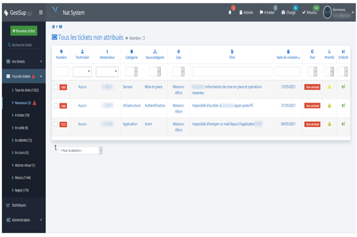
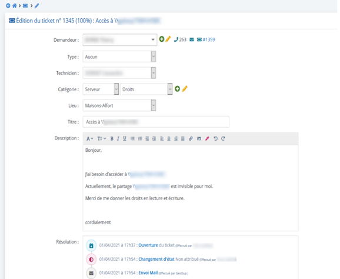

I) Présentation de l'entreprise
a) Nat System
L’entreprise Nat Systèmes a été créée en 1987 par M. Olivier DELLENDACH et s’est spécialisée dans la création d’outils de développement permettant de concevoir des applications sur‐mesure.
Dans les années 1990 Nat Systèmes prend son envol grâce à leur premier outil de développement client/serveur : NS‐DK.
Nat Systèmes sera aussi à l’origine du développement des premières versions du célèbre logiciel de l’entreprise de Microsoft Corporation : Microsoft Visual C++ aussi connu sous le nom Microsoft Visual.

Le siège social de Nat System se situe désormais à Maisons‐Alfort, au Sud‐Est de Paris. Nat System est actuellement l’éditeur de nombreux produits basés sur son propre langage, le NCL (Natsystem’s Code Language) dont voici une sélection :
- NatJet – Solution Java riche et économique
- NatXtend – Migrer les applications existantes vers Java EE
- NatStar – Concevoir des applications stratégiques métier
- NS‐DK – Développer des applications graphiques d’envergure
- NatRcs – Nat System Rich Client Solution, permet de standardiser les ap-plications métiers
b) Chiffres clefs
- 90 collaborateurs
- 400 clients en Europe
- Plus de 30 ans d’expérience
- Références clients:
c) Ornigramme

II) Les missions
a) Traitement des incidents, aide a l'utilisateur
Les utilisateurs confrontés à un problème se doivent de remplir un ticket d’incident.
C’est par l’outil de Ticketing GestSup, que nous répondons et résolvons leurs demandes.

Exemple d’un incident :

b) Préparation d'ordinateur
Durant mes semaines de stage, une de mes missions consistait de préparer des dizaines d’ordinateurs neufs pour des personnes de l’entreprise (des développeurs…). Nat System est composé majoritairement de matériel Dell. Dans chaque ordinateur, il faut installer l’application FortiClient VPN : les collaborateurs chez le client et en télétravail peuvent se connecter au réseau Nat System grâce au client VPN Forticlient. Un fichier de configuration propre à la configuration de Nat System est nécessaire pour son bon fonctionnement. Sur les PC des développeurs, il fallait aussi donner les droits d’Administrateur, pour qu’il dispose d’un accès complet et illimité à l’ordinateur et au domaine.
III) Conclusion
Cette première expérience, au cœur du monde du travail m’a permis de me confronter aux différents défis que posent le milieu professionnel. Ces enjeux dont je n’avais pas profondément pris en conscience. Durant ces cinq semaines, au sein de l’entreprise Nat System, j’ai pu réaliser diverses taches comme : la mise en réseau des postes, résoudre différents problèmes des utilisateurs...